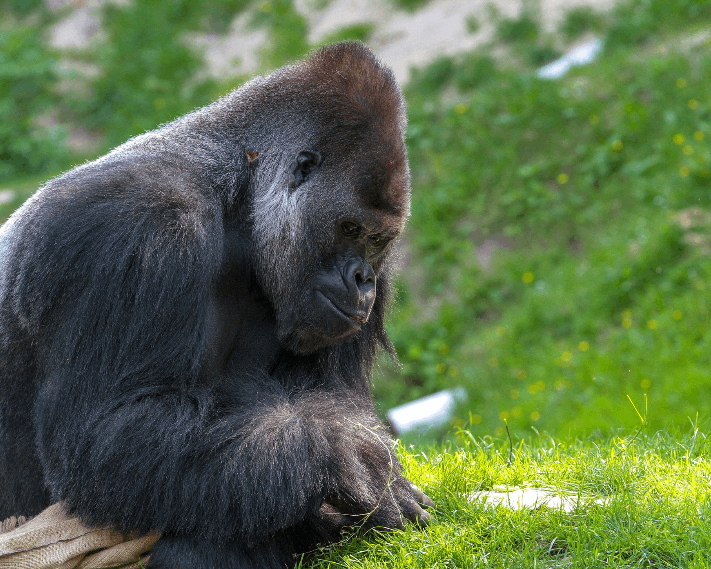
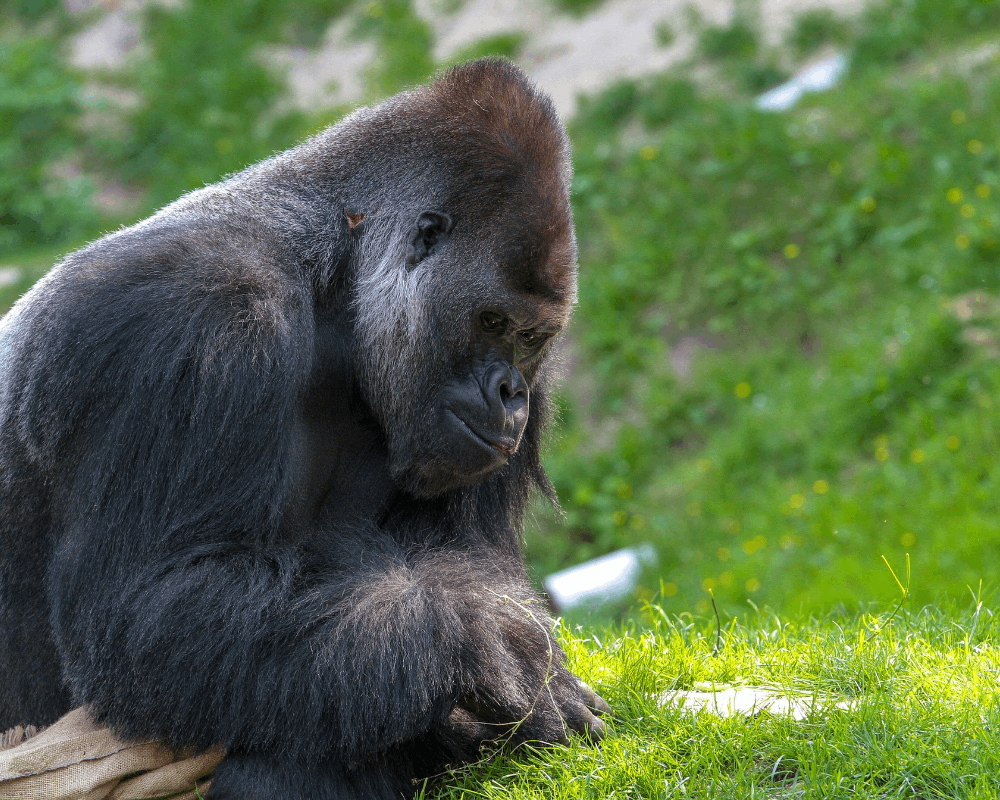

GORILLA TRACKING IN MGAHINGA
GORILLA NATIONAL PARK
This park is one of the few places in the world where the endangered mountain gorillas live and it attracts
people from different countries to come to Uganda on a Gorilla Safari. There is no doubt that the Mgahinga
Gorilla national park is one of the leading tourist sites in Uganda since it harbours these rare primates.
One may wonder why gorilla Safari should be done in Mgahinga and not other places but the secret behind
it is that this park has a thick rain forest with a wide variety of tree species and gorillas are known
to be vegetarians. There is enough food for them in the park and this is the reason why some even migrate
from Congo and Rwanda to this place. Though not in large numbers, gorillas of Mgahinga are easily seen in
their natural habitats and this makes tracking easier compared to other parks.
When to track Gorillas at Mgahinga National Park
The best time to visit the place for tracking is during the two dry seasons when the park is easily accessed.
It is during this time that the thick forests can be penetrated easily and when the paths are not as muddy as it
is in the rainy season. The two dry Seasons best for Gorilla Safari are; mid-December to the end of February and
June to October. However, gorilla tracking tourism is possible throughout the year.
How to get there
By road, one can access the park by use of a car from Kampala via Kabale to Kisoro. This journey takes
about 8 hours. By air, one can board a plane from Entebbe to Kisoro Airstrip which is near the park.
This is the quickest mode of access and it takes about 1 hour. There are daily scheduled flights that
must be booked long in advance with your local Uganda safari operator.
Accomodation
While at Mgahinga Gorilla National Park, one should not worry about accommodation because there are
various lodges suitable for relaxation and overnight. These are found in Ntebeko, Kisoro and Lake Mutanda.
In Ntebeko, the accommodations are; Volcanoes mount Gahinga Safari lodge and Amajambere Iwacu camp.
The lodges in Mutanda include; Lake Mutanda Chameleon Hill Lodge. In Kisoro, the lodges where a visitor
can stay are; Kisoro Traveler's Rest Hotel and River Mucha Hotel
NOTE :
Normally, Gorilla trekking Safari starts from Ntebeko Entrance gate at around 8:00amin the morning daily
taking 2-4 hours. A visitor is expected to budget for his/her time well while with a gorilla family since
the maximum time allowed to spend with them is one hour.
 
